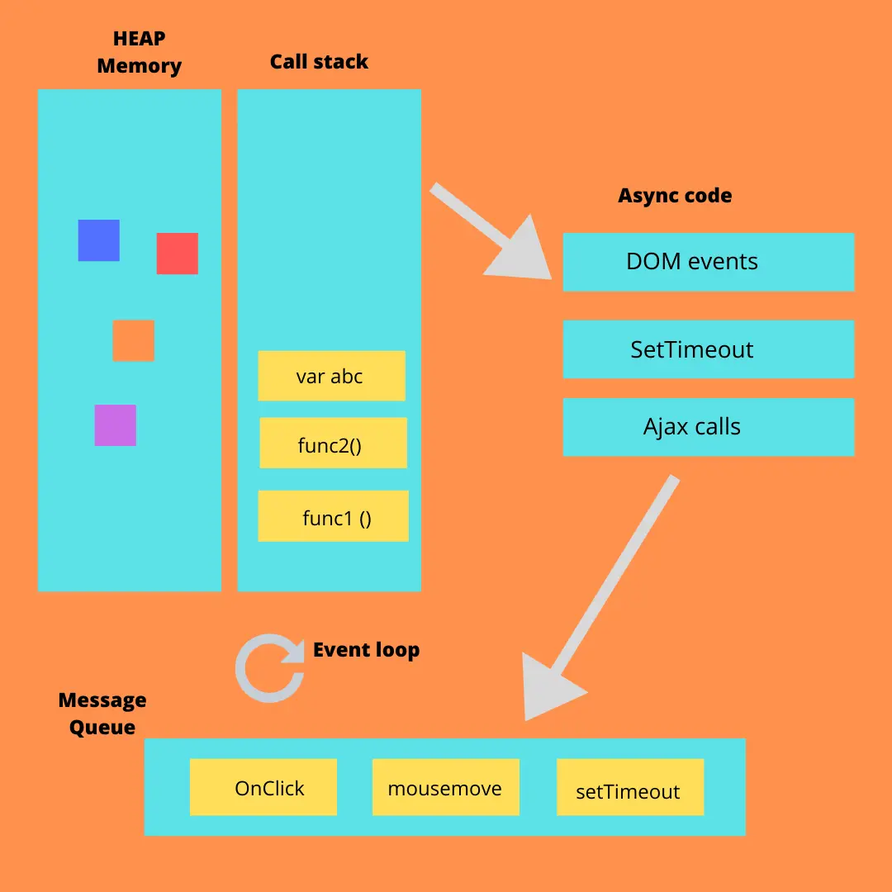

1. Differences between Local Storage and Session Storage?
Ans: Local storage: is the most recent mechanism. It allows for larger amounts of data to be stored, but the data is not deleted when the browser is closed. Local storage is useful for storing data that the user will need to access later, such as offline data.
Session storage: is similar to cookies, but the data is only stored for the current session. This means that the data will be deleted when the user closes the browser. Session storage is useful for storing data that is sensitive, such as login credentials.
2. What is the difference between global scope and block scope?
Ans: Global Scope: The variables defined outside of any function or curly brackets are known as global variables and have global scope. Global scope means that the variables can be accessed from any part of that program, any function or conditional state can access that variable.
Block Scope: Block scope is also a sub-type of local scope. The block scope can be defined as the scope of the variables inside the curly brackets {}. Now, these curly brackets can be of loops, or conditional statements, or something else. You are only allowed to refer to these variables from within the curly brackets {}.
3. How dose event loop works?
Ans: The Event Loop is an infinite loop that keeps waiting for a queue (sometimes referred to as the Callback Queue or Event Queue) to be filled with tasks. As and when the callback queue gets filled up with a task, the Event Loop kicks in and removes the task based on FIFO (First In First Out) from the Callback Queue. It is then pushed on to the Call Stack which executes the task.
